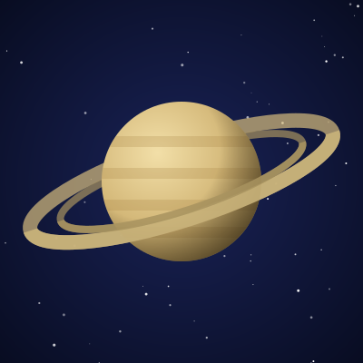
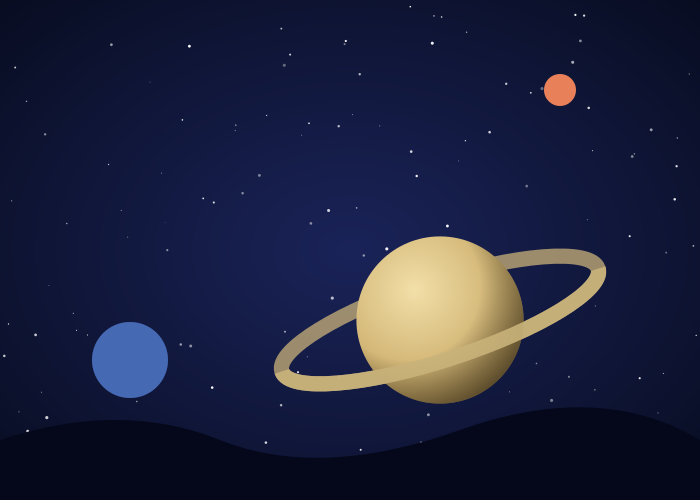
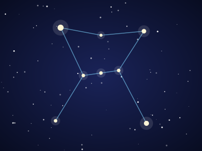
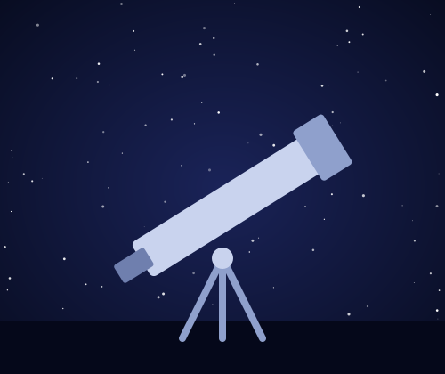

כוכבי לכת
שישה כוכבי לכת, ומה אפשר לראות מהם.
לכוכבי הלכתמצפה כוכבים לכל המשפחה
לילות תצפית, טלסקופים והדרכה חמה. בואו להרים את הראש ולגלות את מה שמעל.
להרשמה ללילה תצפית

שישה כוכבי לכת, ומה אפשר לראות מהם.
לכוכבי הלכת
קבוצות כוכבים, צבירים וגלקסיות.
לגרמי השמיים
בחרו תאריך ושריינו מקום בלילה הקרוב.
לטופס ההרשמה